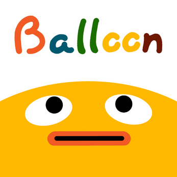

Balloon

ABOUT
Balloon is a game in which you are a balloon and try to push yourself as high as you can.
Won 1st place at University of Michigan Wolverine Soft 2019 48-hours Turkey Game Jam.
Developed by 6 University of Michigan students.
DEVELOPMENT INFO
-
Developed by Lapforce Interactive.
-
48-hours development cycle (2019 Fall, Umich 49-hours Pumpkin Game Jam)
-
6 developers
-
Made using Unity Engine
CONTRIBUTIONS
CONTRIBUTIONS
My major contribution to this project was the design amd implementaiton of the random procedural level generator.
In this game, there is no boundary or transparent wall that block players.
Player as a ballon can go toward any direction as far as they want.
However, have a really really large world for player to fly around is very resource consuming and also require
lots of effort in level design.
To solve this issue, I designed and implemented a random procedural level generator(level manager).
First, I used block as an unit of the world, and then I made several block prefabs with different environment layout.
Then, at the begining of the game, the world starts small with only several blocks surrounding the player.
When the player start flying around, for example, if player flies towawrd left and about to reach the boundary,
the generator will randomly pick a block prefab to expand the world to the left, and also will delete the
blocks that are too far away from the player to avoid resources waste.